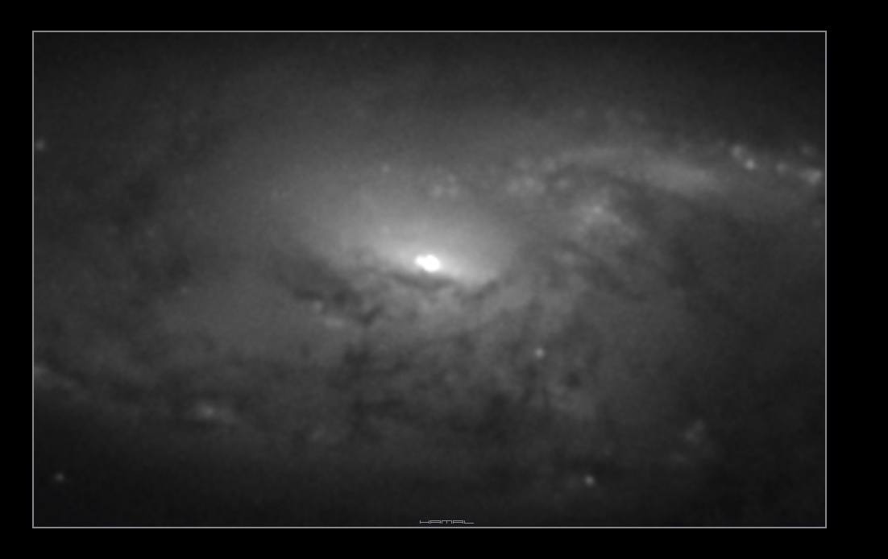

|
 Supernowa SN2014bc - w galaktyce M 106 (Supernovae 2014bc in M106) Zarejestrowana 29/30.04.2014, zgłoszona 26.05.2014, niestety zgłoszenia zostały zignorowane. Registered 29/30 Apr 2014, reported 26 May 2014, but the application has been ignored. http://www.rochesterastronomy.org/sn2014/sn2014bc.htmll
|
|||||||||